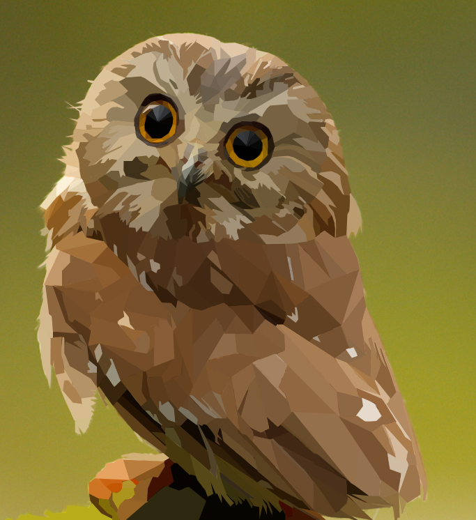

How to get a good idea for a composition:

One of my personal projects
- What is the purpose of the design?
- Who are the target audience?
- Don’t include something that has no reason of being there
- Try to find some inspiration
- Explore outside or search though movies
- Use tutorials
- Practice
- Redesign other works